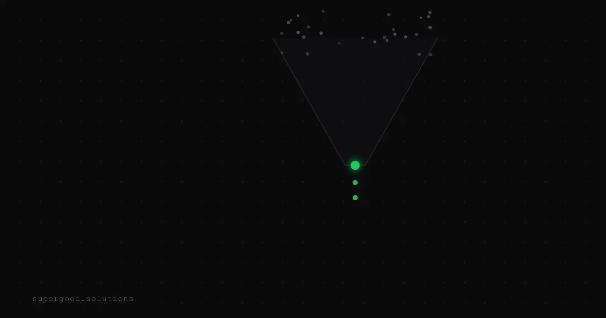

What a Model Router Is and Why Not Every Task Needs Your Best Model
TL;DR: A model router is a small decision step that sends each request to the cheapest model that can handle it. If your team sends every task to your top model, you are paying senior-engineer rates for data entry.
Key Insight
Think of a model router the way you think of a hospital front desk. Nobody walks into the building and gets the heart surgeon. A person at the desk looks at what is wrong and sends you to the right level of care. Most visits are routine, a few are serious, and the whole system works because it does not treat them the same.
AI models work the same way. A frontier model is the surgeon. It is excellent, and it often costs ten times or more per token than a small model. A small model is the nurse practitioner. It handles the bulk of what comes in, quickly and cheaply, and it is very good at the routine cases.
The ROI argument is simple. If 70 percent of your requests are routine, and you send them to a model that costs a tenth as much, your bill drops by well over half before you have changed a single prompt. Quality on the hard 30 percent stays exactly where it was, because those requests still go to the best model.
The research backs this up. The RouteLLM project from LMSYS trained routers on preference data and reported cost reductions of up to 85 percent while keeping about 95 percent of GPT-4 quality on a widely used benchmark. The savings were smaller on harder benchmarks, because routing only pays off in proportion to how much of your traffic is actually easy.
Why Teams Miss This
Most teams pick one model in the first week of a pilot and never revisit it. The reasoning feels safe. Nobody gets blamed for using the best model, and a single model is one less thing to test.
That choice made sense when the pilot was a hundred requests a day. It stops making sense when the same workflow runs a hundred thousand times a month. Classifying a support ticket, extracting an invoice number, and drafting a reply to a legal complaint are three very different jobs. Treating them as one job is the real mistake.
The second miss is the belief that routing is an engineering project for later. It is a budgeting decision first. The question for a business owner is what's the cheapest model that gets this task right often enough, not which one is smartest. Only after that does anyone need to write code.
How to Actually Do It
Start with a sample, not a framework. Pull 200 real requests from your production logs and sort them by hand into three buckets: simple (classification, extraction, formatting), moderate (summarizing, drafting with clear inputs), and hard (multi-step reasoning, ambiguous or high-stakes judgment).
Then run each bucket against a small model and your best model, and have a person score the outputs blind. You are looking for the point where the small model's answers stop being acceptable. That point is your routing boundary.
A first router can be a plain rule. It does not need to be learned.
def pick_model(task_type: str, input_tokens: int, high_stakes: bool) -> str:
if high_stakes:
return "frontier-model"
if task_type in {"classify", "extract", "format"}:
return "small-model"
if task_type == "summarize" and input_tokens < 4000:
return "small-model"
return "frontier-model"Two details matter more than the cleverness of the rule. First, log which model handled each request and whether a human later corrected it. Without that, you cannot tell whether the router is saving money or just moving errors around. Second, add an escalation path. If the small model returns low confidence or fails a validation check, retry once on the better model. That retry costs a few cents and protects you from the cases the rule missed.
Once you have a few weeks of logged outcomes, you can swap the rule for a trained router such as the open-source RouteLLM, which works as a drop-in replacement for the OpenAI client. Starting with the rule first means you already know what good looks like.
The Next Experiment
Routing is a cost decision with a quality guardrail, and the guardrail is what makes it safe to ship. The first experiment is small: take your single most expensive workflow, label 200 of its requests by difficulty, and find out how many of them never needed your best model. If the answer is more than half, you have found your next budget line to cut without touching quality.
Sources
- RouteLLM paper, Learning to Route LLMs with Preference Data: arxiv.org/abs/2406.18665
- LMSYS announcement, RouteLLM open-source framework for cost-effective routing: lmsys.org/blog/2024-07-01-routellm
- RouteLLM code and trained routers: github.com/lm-sys/RouteLLM
Have a specific workflow in mind?
Bring it to a Quick Scan — a live working session where we'll tell you honestly whether it should be an agent, a workflow, or left alone, before you spend a dollar building it. You get 3 prioritized recommendations on the call, a one-page summary after, and the $500 credited toward any engagement within 30 days.
Get new posts + practical agent-ops notes
One email when something new goes up. No nurture sequence, no spam — unsubscribe whenever you want.